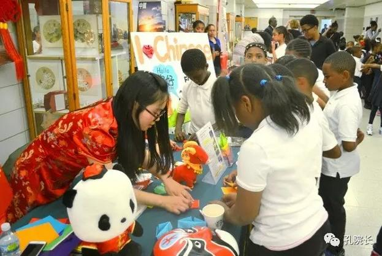
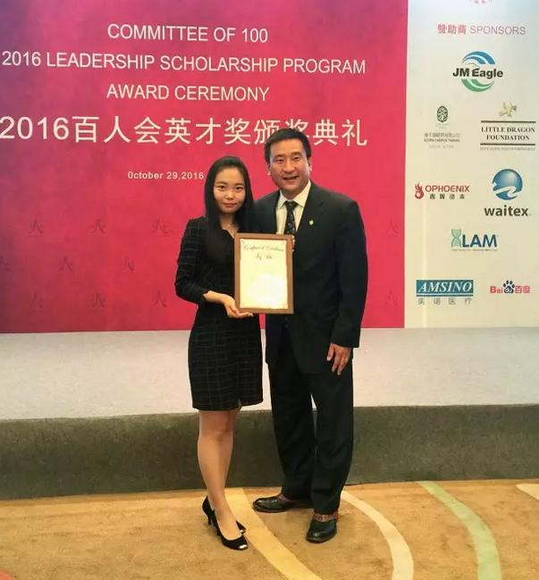

每日一篇——志愿者风采/ 成长·感恩·自豪：我在美国伟恩州立大学孔子学院
 639
639
来源：原创 作者：董嘉蔚
不知不觉我竟已经回国半年了。武汉的天气日渐转暖，我时不时会盯着淅淅沥沥的春雨发呆，不知道底特律的春天到了吗？
2015年9月，我来到了位于美国密西根州底特律市的伟恩州立大学孔子学院任志愿者。一提起“底特律”，不少人心中会立马浮现“城市破产”、“经济衰败”之类的印象。然而当我拖着行李箱踏足这片土地的第一秒，看到等待我的孔院同事和迎接我的美丽夕阳时，我便觉得温馨、安全且满怀期待。
我们的特色
我所在的伟恩孔院十分特别。与绝大部分孔院不同，伟恩孔院并非以汉语课堂教学为主要工作内容，而是以开展中国语言文化活动为主。一年12个月，几乎每个月伟恩孔院都会举办一两个大型活动，比如：2月有伟恩州立大学春节晚会、3月有密西根生肖艺术设计大赛、4月有密西根中文知识竞赛、7、8月有龙舟节、10月有文艺晚会、11月有密西根中文教师协会年会、12月有大底特律地区中华厨艺大赛等等。在筹备这些大型活动期间，孔院的志愿者们也会维持日常活动的正常运转：每周一至周三下午组织“汉语角”，为伟恩师生免费辅导汉语；每周四举办“孔子茶座”，邀请嘉宾围绕一个中国文化主题作演讲交流；我们都接受大底特律周边的中小学的邀请，为那里的孩子提供太极扇、中国书画、中国舞蹈等文化课支教；每月我们还会定期在YouTube和优酷上推出我们自制的“Learn a Chinese Phrase”(两分钟趣味汉语短语）系列学习视频……这些大大小小的活动、项目对每个来到伟恩孔院的志愿者来说都是不小的挑战——每个志愿者都必须在各种角色中自如转换，并且独当一面。也正是这样的挑战使我们每个志愿者逐渐成长、成熟。
在伟恩孔院的众多活动中，一年一度的密西根中文知识竞赛（Michigan China Quiz Bowl）可以算是重中之重了。密西根中文知识竞赛自2008年创办至今，已经成功举办了九届。每年春天，伟恩孔院就会面向整个密西根州开设有汉语课程的初中和高中发出邀请，每3-4个非华裔美国学生即可自行组队，由该校的中文老师统一带队参赛。
根据年龄段，我们将参赛队伍分为初中组和高中组，并根据学生学习汉语的年限在两个大组内再下设3个水平级别。竞赛题的内容不仅包括了主要汉语教材上的语言知识，还有中国地理常识题和“Learn a Chinese Phrase”相关的趣味汉语短语题。整个竞赛将会进行一天，每年都会有七八十支参赛队伍、二百多名师生和家长来到韦恩孔院参加比赛。活动当天，会有十余间教室同时展开大约30场对抗赛，超过80名裁判和志愿者投入比赛维持活动运转。China Quiz Bowl的奖杯已经成了获得密西根当地师生、家长和学校普遍认可的重要奖项。
2016年4月，作为项目组长的我和其他志愿者一起筹办了第八届密西根中文知识竞赛。为了让前来参赛的师生充分感受中国语言文化的魅力，我们在竞赛考场外额外开辟了三间大教室。
一间教室专门展出以“猴年”、“汉字”为主题的生肖艺术设计展品，包括绘画、T恤和3D创意作品；一间专门展出中国地理知识展板、播放“Learn a Chinese Phrase”视频，开展趣味短语的游戏有奖竞答；另外，还展出了中国唐装、旗袍、汉服等传统服饰，并为学生提供试穿摄影服务。整整一天的竞赛，既激烈又有趣。每个参赛者都体会了在玩中学，在学中玩的乐趣，也在跨校比赛中赢得了荣誉，收获了友谊。

突出的亮点
除了China Quiz Bowl，“Learn a Chinese Phrase”汉语视频也深刻渗透着我们“玩中学，学中玩”的理念。虽然伟恩孔院并没有定向地为某一学校提供汉语课程，但是借助网络平台，我们以趣味视频的形式向全世界所有的汉语学习者提供汉语学习资源。几乎每周，我们都会选取一到两个流行的汉语短语、俗语，由美方和中方院长合作编写剧情脚本，由孔院志愿者和美国学生搭档演绎录制视频，并最终发布在YouTube、优酷和伟恩孔院官网上。
截至去年十月，我们的“Learn a Chinese Phrase”已经发布了100个，仅在YouTube频道上就拥有1400个订阅者和超过104,000的观看量！为了帮助汉语学习者更好地利用这个视频资源，我们还编订了与视频相配套的《学习者手册》讲解具体的词语用法，开发了手机app提供对应的练习。打磨演技录制视频、开会讨论《手册》内容、后期编辑……每一个环节无不凝聚着伟恩孔院每个人的心血。
可是，每当我看到有人在书包上挂着“万人迷”、“学霸”、“校花”等短语徽章时，每当我遇到美国学生脱口而出“三天打鱼两天晒网”、“青梅竹马”、“长话短说”等短语，并在句子中运用的恰到好处时，我也就收获了满满的幸福感。
满满的收获
正是由于在美国伟恩孔院的这些经历，去年10月，我有幸被美国华人精英组织“百人会”授予“2016年度百人会英才奖”。当我与来自北京大学、清华大学、复旦大学等16所全国顶尖学府的32名获奖者一起接受颁奖，并受到新华网、凤凰网、新浪网、中国青年网等国内十余家媒体报道时，我的内心只有感恩。我感恩伟恩孔院为我提供历练的平台，感恩在工作中为我提供帮助的院长、同事和美国朋友们，也感恩当时那个满怀热情、认真做事的自己。
我深知自己只是万千孔院志愿者中的极为普通的一个，在世界的各个角落还有许许多多在对外汉语教学及中华文化推广一线工作的教师和志愿者。我们都怀着一样的初心，一样执着于提升中国软实力的事业，一样为“孔子学院汉语教师志愿者”的称号自豪！

作者简介：
董嘉蔚，华中科技大学研究生，2015.10–2016.10在美国底特律伟恩州立大学孔子学院担任汉语教师志愿者。